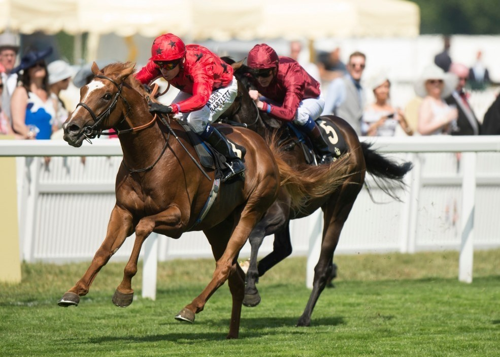

BALIOS
(Shamardal - Elle Galante/Galileo)
Ogier rasy Koń Pełnej Krwi Angielskiej, urodzony 22 marca 2012 roku.
Wyhodowany przez Sheikh Sultan Bin Khalifa Al Nahyan.
W czasie 3-letniej kariery wyścigowej biegał i wygrywał na torach w Anglii, Francji, oraz Dubaju. Zwycięzca wyścigu King Edward VII Stakes na torze w Ascot.
